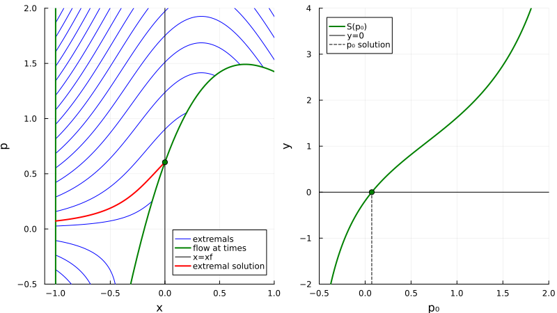

Indirect simple shooting
In this tutorial we present the indirect simple shooting method on a simple example.
Let us start by importing the necessary packages.
using OptimalControl
using MINPACK # NLE solverLet us consider the following optimal control problem:
\[\left\{ \begin{array}{l} \min \displaystyle \frac{1}{2} \int_{t_0}^{t_f} u^2(t) \, \mathrm{d} t\\[1.0em] \dot{x}(t) = \displaystyle -x(t)+\alpha x^2(t)+u(t), \quad u(t) \in \R, \quad t \in [t_0, t_f] \text{ a.e.}, \\[0.5em] x(t_0) = x_0, \quad x(t_f) = x_f, \end{array} \right.%\]
with $t_0 = 0$, $t_f = 1$, $x_0 = -1$, $x_f = 0$, $\alpha=1.5$ and $\forall\, t \in [t_0, t_f]$, $x(t) \in \R$.
t0 = 0
tf = 1
x0 = -1
xf = 0
α = 1.5
@def ocp begin
t ∈ [ t0, tf ], time
x ∈ R, state
u ∈ R, control
x(t0) == x0
x(tf) == xf
ẋ(t) == -x(t) + α * x(t)^2 + u(t)
∫( 0.5u(t)^2 ) → min
end;The pseudo-Hamiltonian of this problem is
\[ H(x,p,u) = p \, (-x+\alpha x^2+u) + p^0 u^2 /2,\]
where $p^0 = -1$ since we are in the normal case. From the Pontryagin Maximum Principle, the maximising control is given by
\[u(x, p) = p\]
since $\partial^2_{uu} H = p^0 = - 1 < 0$. Plugging this control in feedback form into the pseudo-Hamiltonian, and considering the limit conditions, we obtain the following two-points boundary value problem (BVP).
\[ \left\{ \begin{array}{l} \dot{x}(t) = \phantom{-} \nabla_p H[t] = -x(t) + \alpha x^2(t) + u(x(t), p(t)) = -x(t) + \alpha x^2(t) + p(t), \\[0.5em] \dot{p}(t) = - \nabla_x H[t] = (1 - 2 \alpha x(t))\, p(t), \\[0.5em] x(t_0) = x_0, \quad x(t_f) = x_f, \end{array} \right.\]
where $[t]~= (x(t),p(t),u(x(t), p(t)))$.
Our goal is to solve this (BVP).
To achive our goal, let us first introduce the pseudo-Hamiltonian vector field
\[ \vec{H}(z,u) = \left( \nabla_p H(z,u), -\nabla_x H(z,u) \right), \quad z = (x,p),\]
and then denote by $z(\cdot, t_0, x_0, p_0)$ the solution of the following Cauchy problem
\[\dot{z}(t) = \vec{H}(z(t), u(z(t))), \quad z(t_0) = (x_0, p_0).\]
To compute $z$ with the OptimalControl package, we define the flow of the associated Hamiltonian vector field by:
u(x, p) = p
f = Flow(ocp, u)Actually, $z(\cdot, t_0, x_0, p_0)$ is also solution of
\[ \dot{z}(t) = \vec{\mathbf{H}}(z(t)), \quad z(t_0) = (x_0, p_0),\]
where $\mathbf{H}(z) = H(z, u(z))$ and $\vec{\mathbf{H}} = (\nabla_p \mathbf{H}, -\nabla_x \mathbf{H})$. This is what is actually computed by Flow.
We define also an auxiliary exponential map for clarity.
exp(p0; saveat=[]) = f((t0, tf), x0, p0, saveat=saveat).ode_solNow, to solve the (BVP) we introduce the shooting function.
\[ \begin{array}{rlll} S \colon & \R & \longrightarrow & \R \\ & p_0 & \longmapsto & S(p_0) = \pi(z(t_f, t_0, x_0, p_0)) - x_f, \end{array}\]
where $\pi(x,p) = x$. At the end, solving (BVP) leads to solve
\[ S(p_0) = 0.\]
This is what we call the indirect simple shooting method.
S(p0) = exp(p0)(tf)[1] - xf; # shooting function
nle = (s, ξ) -> s[1] = S(ξ[1]) # auxiliary function
ξ = [ 0.0 ] # initial guess
indirect_sol = fsolve(nle, ξ) # resolution of S(p0) = 0
p0_sol = indirect_sol.x[1] # costate solution
println("costate: p0 = ", p0_sol)
println("shoot: |S(p0)| = ", abs(S(p0_sol)), "\n")costate: p0 = 0.07202997482167581
shoot: |S(p0)| = 1.1167321291595698e-15We get:
